Smart contracts: definition, deployment, invocation, Gas, Solidity example
Issues and open challenges of current DLT/BCT
1. Middleware and DLT
Middleware is classically defined as a software layer that sits between the operating system and applications, providing common services so that developers do not need to reimplement them for every project. As Tanenbaum and van Steen put it, middleware abstracts away OS heterogeneity, enables interoperability, and reduces development cost by reusing high-quality solutions for hard problems.
Key idea
Middleware is developed once for many applications. It lets us afford better designers and provides reusable services — authentication, security, distributed access to shared resources, and consensus.
A critical question arises: should we write consensus algorithms from scratch for every distributed application that needs them? Or should consensus be provided as part of a new middleware layer? Distributed Ledger Technology (DLT) answers this question by offering consensus, immutability, and synchronisation as a service — middleware for trust.
The ITU Focus Group on DLT defines it as "the processes and related technologies that enable nodes in a network to securely propose, validate, and record state changes (or updates) to a synchronised ledger that is distributed across the network's nodes". Notice the key point: the ledger is synchronised, while the nodes and network are not required to be synchronous. DLT thus acts as a synchronising layer — exactly what middleware does in a distributed system.
Editor's note
The middleware perspective explains why DLT is not just about cryptocurrencies. It provides horizontal communication (application-to-application, middleware-to-middleware) with strong guarantees about ordering, finality, and immutability — the kind of infrastructure that enterprise integration has always needed.
2. DLT Definitions, Standards, and Architecture
ISO/TC 307 provides precise vocabulary: a ledger is an information store that keeps records of transactions intended to be final, definitive, and immutable. A distributed ledger is shared across a set of DLT nodes and synchronised between them using a consensus mechanism. Distributed ledger technology is the technology enabling the operation and use of distributed ledgers.
Important
DLT is not the same as Blockchain Technology (BCT). BCT is one way to implement a distributed ledger — but not all distributed ledgers use blockchains. Examples: IOTA (DAG-based Tangle), Hedera Hashgraph, and R3 Corda. In general, DLT ⊃ BCT.
Standardisation Bodies
Body
Focus
Key Output
ITU FG DLT
UN agency for ICT; focus on DLT applications
Reference architecture, terms, use cases (2017–2019)
ISO/TC 307
Blockchain and DLT standardisation
ISO 22739 vocabulary (2020, rev. 2024)
High-Level DLT Architecture
The ITU FG DLT defines a layered architecture: a resource and infrastructure layer (network, storage, computation) below a ledger layer (consensus, data model, smart contracts) above an application layer (APIs, user interfaces). This layered design is itself middleware-like — abstracting the complexity of consensus and replication from application developers.
DLT Benefits
As a General Purpose Technology (GPT), DLT brings gains across multiple sectors: finance (letters of credit, insurance), pharma (vaccine supply chains), medicine (organ donation registries, health records), ICT (number portability), and energy (P2P trading).
The examiner will ask
Why is DLT considered middleware? Because it provides a synchronising layer for processes that would otherwise need to implement consensus from scratch. It sits between the OS/network layer and the application layer, offering interoperability, conceptual integrity, and reusable infrastructure — the defining characteristics of middleware.
3. Cryptographic Foundations
Blockchains rest on three cryptographic primitives:
One-Way Hash Functions
A hash function H maps an input of arbitrary size to a fixed-size digest. Key properties: preimage resistance (given y, infeasible to find x such that H(x)=y), collision resistance (infeasible to find x≠y with H(x)=H(y)), and the avalanche effect (a small change in input produces a completely different digest).
Public-key cryptography uses a public key (shared openly) and a corresponding private key (kept secret). The operations depend on the scheme: public-key encryption encrypts for a recipient, while a digital-signature scheme signs with a private key and verifies with a public key. These are not interchangeable operations. Security relies on deriving the private key or forging a signature being computationally infeasible under the scheme's assumptions.
Digital Signatures
A sender generates a digital signature using a signing algorithm and their private key: signature = Sign(sk, message). A verifier checks Verify(pk, message, signature) using the corresponding public key. Signing is not, in general, encryption with a private key: ECDSA and EdDSA have distinct signing and verification procedures. Identifying a real-world sender also requires a trustworthy binding between that identity and the public key. See the NIST Digital Signature Standard.
Key idea
In blockchain, user identifiers are derived from public keys via a one-way hash function (e.g., Address = H(K_pub)). This provides pseudonymity: a user can own multiple addresses with no visible link between them.
4. Hash Chains, Timestamping, and Notary Services
Hash Chains
Hash functions can be used to build hash chains. Each event is stored within a block b_i. Each block b_{i+1} records the hash of the previous block H(b_i). This creates an immutable sequence: altering any past block would change its hash, breaking the chain link and revealing the tampering.
By including timestamps in hash chains, we get a timestamping service. Blocks are appended periodically (parameter Δt), recording what happened and when.
Notary Service
Making the timestamping service only accept correctly-signed events yields a notary service. It tracks who did what and when, providing non-repudiation. Applications include supply-chain tracking, voting systems, property registries, employee punching systems, and — of course — cryptocurrencies.
The examiner will ask
What is the single point of trust in a centralised notary service? The party running the server may be corrupted and arbitrarily alter the ordering/timing of events or exclude participants. Replication across multiple independent parties is the solution — and this leads directly to State Machine Replication.
5. State Machine Replication
State Machine Replication (SMR) executes an agreed sequence of operations on deterministic replicas. With a suitable replication protocol and explicit fault assumptions, correct replicas provide a consistent service. Replication alone does not guarantee availability, privacy or protection against every form of tampering.
Deterministic Stateful Computation
A computation is stateful when its output depends on both input and current state. A computation is deterministic if its state depends only on the initial state and the sequence of inputs. For SMR to work, the state machine must be both stateful and deterministic:
Every replica starts from the same initial state
Every replica processes inputs in the same order
Result: they all move through the same succession of states
Challenges in Open Distributed Systems
SMR must cope with lost or delayed messages, network partitions, and possibly Byzantine participants. Transport protocols and hashes help with delivery and integrity, but do not by themselves establish a common order across replicas. The replication protocol must agree on an ordered sequence of inputs before deterministic execution. Synchronized wall clocks are not a substitute for that agreement.
6. CAP Theorem, Eventual Consistency, Byzantine Faults
CAP Theorem (Brewer, 2000)
For a read/write service, CAP concerns the following precise guarantees and failure model:
Consistency (C) — linearizability: a legal sequential history preserving real-time precedence
Availability (A) — every request received by a non-failing node eventually completes, without a fixed time bound
Partition tolerance (P) — the guarantees must cover executions with arbitrary loss of cross-node messages
C and A cannot both be guaranteed in all executions of that failure model. This is not an instantaneous “pick two” rule, and “blockchain” does not select one universal policy. Accepting a transaction into a local queue is not the same as completing an operation with the promised finality. The protocol, confirmation rule and network/adversary assumptions determine what can be guaranteed. See the read/write model and counterexample in DS-C1.
Finality depends on the protocol
A permissionless network need not use proof-of-work or probabilistic finality. For Nakamoto-style PoW, confirmation confidence is conditional on an adversary and network model, not a universal guarantee. PBFT-style committed operations have a different safety argument. Neither means all replicas update simultaneously.
Byzantine Fault Tolerance (BFT)
The Byzantine Generals Problem (Lamport et al., 1982) captures the challenge of reaching agreement when nodes may be arbitrarily faulty — lying, colluding, or sending conflicting messages. In a blockchain, Byzantine faults are particularly dangerous because bad actors have economic incentives to cheat.
In the PBFT model, use N = 3f + 1 authenticated replicas with at most f Byzantine faults. Safety preserves a linearizable service history despite arbitrary delay; liveness additionally needs the protocol's timing and delivery assumptions. The threshold is not a theorem about every possible BFT model, nor does adding enough machines implement a protocol.
For two certificates of size Q, their intersection contains at least 2Q − N identities. To force at least one correct shared sender, require 2Q − N > f. To collect a certificate despite f silent replicas, require Q ≤ N − f. Combining these quorum requirements gives N > 3f. At N = 3f + 1, choose Q = 2f + 1. The protocol must also prevent a correct sender from endorsing conflicting values in the same view/slot and carry safe evidence across views.
Quorum intersection arithmetic, not a complete consensus proof
N, f, Q
Minimum intersection
What follows?
4, 1, 3
2
At least one shared identity is correct; three replies remain possible with one silent replica.
5, 1, 3
1
Unsafe threshold reuse: the shared identity could be Byzantine. More replicas do not preserve the old certificate argument automatically.
5, 1, 4
3
Both intersection and silence constraints hold; this arithmetic alone does not specify a five-replica PBFT variant.
FLP: a termination limit
With deterministic processes, unbounded delays and even one possible crash, consensus cannot guarantee termination in every admissible asynchronous execution. The theorem does not say that no execution can decide, nor that safety requires synchrony. Timeouts do not prove a process is dead. Protocols must state additional progress assumptions or use a different termination guarantee; not all consensus protocols run periodic synchronous rounds. Fischer, Lynch and Paterson, 1985.
The next explorer is a conceptual local-state map. It does not count votes or execute view changes. Section 9 separately provides the normal-case message model.
Users are identified by a function of their public key, typically a hash: Address = H(K_pub). In permissionless systems, users can create many pseudonymous addresses (pseudonymity, decentralisation, but vulnerable to Sybil attacks). In permissioned systems, a Certificate Authority (CA) certifies each identity.
The World State
The system state is a set of assets: ⟨SystemState⟩ ::= ⟨UserID⟩, ⟨AssetState⟩. The asset state can be a balance (cryptocurrency), custom data, or a smart contract's storage. Three common implementations: account-based (Ethereum), UTXO (Bitcoin), and versioned key-value store (Hyperledger Fabric).
Transactions
A transaction proposes a state change. This schematic tuple lists an issuer, operation, arguments and authentication data; actual formats are protocol-specific. A well-formed, correctly signed request can still be invalid for the current state: insufficient funds, missing authorization or a replay can cause rejection. Validation and execution must follow the protocol's ordering and state-transition rules. A signature does not authorize arbitrary minting.
Blocks and competing branches
A block format is protocol-specific. Bitcoin links a header to the previous header hash and commits to transactions through a Merkle root; it does not list every resulting account balance in the header. A parent link, a height increment and an approximately ten-minute timestamp are not a sufficient validity test. The ten-minute interval is a target average, not a narrow allowed spacing between consecutive blocks. Each node checks the complete consensus rules. Bitcoin developer guide: block structure, work and forks.
The following toy account ledger isolates branch structure and deterministic state changes. IDs G/B1/etc. are labels, not hashes. Transactions use half-unit integer arithmetic; authentication is assumed, and there are no fees, rewards or minting. Candidate transfers with insufficient funds are rejected before constructing the displayed block. This is separate from both the section 8 transfer fixture and the section 10 hashing experiment.

Arrows run from parent to child; the child’s parent reference points the other way. G/B1/etc. are schematic IDs, not fabricated hash strings. Every non-genesis block has equal assumed work here. B3A and B3B tie; arrival of B4 makes the B3B branch heavier. B3A becomes stale, not invalid. The rejected Eve transfer is excluded before B2 is constructed. The trace and balances are derived from the same toy ledger. This diagram shows the final known tree, not every intermediate arrival state.
The arrival controls require JavaScript. The native diagram and complete trace below remain available without it.
Every arrival and the selected branch
All balances use toy units. Work is equal per non-genesis block. A tie retains the first-seen tip in this example. Scroll horizontally on narrow screens.
Received
Tip
Alice
Bob
Carol
Eve
G
G
20
5
2
0.5
B1
B1
17
8
2
0.5
B2
B2
17
7
3
0.5
B3A
B3A
17
7.5
2.5
0.5
B3B
B3A
17
7.5
2.5
0.5
B4
B4
15
7
4
1.5
G: parent none, height 0
Included: none. Rejected before inclusion: none.
Balances: Alice=20, Bob=5, Carol=2, Eve=0.5.
B1: parent G, height 1
Included: Alice → Bob: 3. Rejected before inclusion: none.
Balances: Alice=17, Bob=8, Carol=2, Eve=0.5.
B2: parent B1, height 2
Included: Bob → Carol: 1. Rejected before inclusion: Eve → Alice: 2.
Balances: Alice=17, Bob=7, Carol=3, Eve=0.5.
B3A: parent B2, height 3
Included: Carol → Bob: 0.5. Rejected before inclusion: none.
Balances: Alice=17, Bob=7.5, Carol=2.5, Eve=0.5.
B3B: parent B2, height 3
Included: Alice → Carol: 2. Rejected before inclusion: none.
Balances: Alice=15, Bob=7, Carol=5, Eve=0.5.
B4: parent B3B, height 4
Included: Carol → Eve: 1. Rejected before inclusion: none.
Balances: Alice=15, Bob=7, Carol=4, Eve=1.5.
8. Transaction Validation Widget
This is a toy transfer ledger using illustrative units, not Ethereum transaction validation. Authentication outcomes are supplied test fixtures, not computed signatures. Transfers are checked and applied in the displayed order; invalid ones leave balances unchanged. Real protocols also check rules such as authorization, replay protection and fees.
TX #0: Transfer
Alice → Bob: 5 units
Authentication fixture: valid
Pending
TX #1: Transfer
Bob → Carol: 3 units
Authentication fixture: valid
Pending
TX #2: Transfer
Eve → Alice: 100 units
Authentication fixture: valid
Pending
TX #3: Transfer — invalid signature
Alice → Carol: 10 units
Authentication fixture: invalid
Pending
Click "Validate All Transactions" to begin.
Balances before validation: Alice: 20 units, Bob: 5 units, Carol: 2 units, Eve: 0.5 units
Expected transfer trace
Rejected transfers leave every balance unchanged. Total supply stays 27.5 units. Scroll the table horizontally on narrow screens.
TX / result
Alice
Bob
Carol
Eve
0 / applied
15
10
2
0.5
1 / applied
15
7
5
0.5
2 / insufficient funds
15
7
5
0.5
3 / bad signature
15
7
5
0.5
9. Consensus and Mining: PBFT and PoW
These are two examples with different assumptions, not an exhaustive classification of consensus.
PBFT was presented by Castro and Liskov at OSDI 1999; the slides cite their extended 2002 article. The normal case below uses N = 3f + 1, authenticated identities, an honest primary and the same initial deterministic state. Replica IDs and view numbers select the primary; a timeout alone does not install a new view.
Request: the client sends its operation to the primary.
Pre-prepare: the primary proposes a view, sequence number and request digest. A backup checks authentication, digest, current view, watermarks and absence of a conflicting proposal for that view/slot.
Prepare: each accepting backup broadcasts a PREPARE and logs its own vote. The primary does not send PREPARE in this version.
Prepared: a replica has the request, matching PRE-PREPARE and 2f matching PREPARE messages from distinct backups (including its own if it is a backup). It then broadcasts COMMIT.
Committed locally: the replica is prepared and has 2f + 1 matching COMMIT messages from distinct replicas, possibly including its own.
Execute and reply: execute only after committed-local and all lower slots have been executed; send the result to the client. Different replicas can reach this point at different times.
Client accepts:f + 1 authenticated matching replies for its request, from distinct replicas. One comes from a correct replica; this threshold relies on the replication protocol, not simple majority voting.
The PRE-PREPARE plus 2f backup PREPAREs involve 2f + 1 identities, but are not 2f + 1 PREPARE messages. A commit certificate is different again. View changes carry checkpoint/prepared evidence and validate the new proposals; “restart at the last checkpoint” alone would lose required ordering information. Original PBFT paper, §§3–4.
Local evidence flow for one request, not a globally synchronized round. N = 3f + 1; at most f Byzantine replicas. The primary contributes PRE-PREPARE, not a PREPARE. Matching means the same view, slot and digest, from distinct authenticated senders. Commit counts can include the local vote. Execution also waits for lower slots. Timeouts and safe view-change evidence are described in the text; they are not implemented by these arrows.
All-to-all prepare/commit traffic is quadratic in the replica count in the straightforward normal case. This is an engineering cost, not a universal fixed limit of 100–1000 nodes or a guaranteed transactions-per-second figure. PBFT also consumes computation and network resources; avoiding a PoW puzzle does not mean zero energy cost.
Proof-of-work underlies Bitcoin's block production. Ethereum Mainnet switched to proof-of-stake on 15 September 2022; references to Ethereum mining here are historical, not current. Ethereum: The Merge.
Bitcoin miners search for a block-header hash at or below the encoded target. The familiar leading-zero illustration is a simplification of a numeric comparison. Hash attempts do not accumulate percentage progress toward a solution; an unsuccessful trial does not make the next independent trial more likely to succeed.
Nodes validate blocks independently and select among valid branches by accumulated proof-of-work, not simply by the greatest number of blocks. Concurrent discoveries can produce temporary branches; later work can cause a reorganization. Convergence and confirmation confidence depend on the network/adversary model. A branch not selected as the main chain is usually called stale, not necessarily a block with an unknown parent. Nakamoto, 2008, §§4–6 and 11.
PoW weights influence by hash work rather than invented identities. It does not make attacks impossible below 50%, and its throughput, costs and security are not universal constants. Section 10 computes a small, explicitly non-Bitcoin hashing experiment; section 11 separately explains a conditional confirmation calculation.
Interactive: local evidence, one message at a time
The message model requires JavaScript. The native diagram and complete static trace remain available below.
Full normal-case trace: one silent backup
Each row is one actual delivery after the client sends its request. P lists matching PREPARE senders; C lists matching COMMIT senders. The primary does not send PREPARE. Own votes are logged locally. R4 remains silent. Scroll horizontally on narrow screens.
FIFO delivery order is only one possible schedule
Action
R1 evidence
R2 evidence
R3 evidence
Client
Client sends request
PP: — P: — C: — waiting
PP: — P: — C: — waiting
PP: — P: — C: — waiting
waiting Replies: —
request: C → R1
PP: X P: — C: — waiting
PP: — P: — C: — waiting
PP: — P: — C: — waiting
waiting Replies: —
pre-prepare: R1 → R2
PP: X P: — C: — waiting
PP: X P: 2 C: — waiting
PP: — P: — C: — waiting
waiting Replies: —
pre-prepare: R1 → R3
PP: X P: — C: — waiting
PP: X P: 2 C: — waiting
PP: X P: 3 C: — waiting
waiting Replies: —
pre-prepare: R1 → R4
PP: X P: — C: — waiting
PP: X P: 2 C: — waiting
PP: X P: 3 C: — waiting
waiting Replies: —
prepare: R2 → R1
PP: X P: 2 C: — waiting
PP: X P: 2 C: — waiting
PP: X P: 3 C: — waiting
waiting Replies: —
prepare: R2 → R3
PP: X P: 2 C: — waiting
PP: X P: 2 C: — waiting
PP: X P: 2,3 C: 3 prepared
waiting Replies: —
prepare: R2 → R4
PP: X P: 2 C: — waiting
PP: X P: 2 C: — waiting
PP: X P: 2,3 C: 3 prepared
waiting Replies: —
prepare: R3 → R1
PP: X P: 2,3 C: 1 prepared
PP: X P: 2 C: — waiting
PP: X P: 2,3 C: 3 prepared
waiting Replies: —
prepare: R3 → R2
PP: X P: 2,3 C: 1 prepared
PP: X P: 2,3 C: 2 prepared
PP: X P: 2,3 C: 3 prepared
waiting Replies: —
prepare: R3 → R4
PP: X P: 2,3 C: 1 prepared
PP: X P: 2,3 C: 2 prepared
PP: X P: 2,3 C: 3 prepared
waiting Replies: —
commit: R3 → R1
PP: X P: 2,3 C: 1,3 prepared
PP: X P: 2,3 C: 2 prepared
PP: X P: 2,3 C: 3 prepared
waiting Replies: —
commit: R3 → R2
PP: X P: 2,3 C: 1,3 prepared
PP: X P: 2,3 C: 2,3 prepared
PP: X P: 2,3 C: 3 prepared
waiting Replies: —
commit: R3 → R4
PP: X P: 2,3 C: 1,3 prepared
PP: X P: 2,3 C: 2,3 prepared
PP: X P: 2,3 C: 3 prepared
waiting Replies: —
commit: R1 → R2
PP: X P: 2,3 C: 1,3 prepared
PP: X P: 2,3 C: 1,2,3 executed 1
PP: X P: 2,3 C: 3 prepared
waiting Replies: —
commit: R1 → R3
PP: X P: 2,3 C: 1,3 prepared
PP: X P: 2,3 C: 1,2,3 executed 1
PP: X P: 2,3 C: 1,3 prepared
waiting Replies: —
commit: R1 → R4
PP: X P: 2,3 C: 1,3 prepared
PP: X P: 2,3 C: 1,2,3 executed 1
PP: X P: 2,3 C: 1,3 prepared
waiting Replies: —
commit: R2 → R1
PP: X P: 2,3 C: 1,2,3 executed 1
PP: X P: 2,3 C: 1,2,3 executed 1
PP: X P: 2,3 C: 1,3 prepared
waiting Replies: —
commit: R2 → R3
PP: X P: 2,3 C: 1,2,3 executed 1
PP: X P: 2,3 C: 1,2,3 executed 1
PP: X P: 2,3 C: 1,2,3 executed 1
waiting Replies: —
commit: R2 → R4
PP: X P: 2,3 C: 1,2,3 executed 1
PP: X P: 2,3 C: 1,2,3 executed 1
PP: X P: 2,3 C: 1,2,3 executed 1
waiting Replies: —
reply: R2 → C
PP: X P: 2,3 C: 1,2,3 executed 1
PP: X P: 2,3 C: 1,2,3 executed 1
PP: X P: 2,3 C: 1,2,3 executed 1
waiting Replies: 2
reply: R1 → C
PP: X P: 2,3 C: 1,2,3 executed 1
PP: X P: 2,3 C: 1,2,3 executed 1
PP: X P: 2,3 C: 1,2,3 executed 1
accepted 1 Replies: 1,2
reply: R3 → C
PP: X P: 2,3 C: 1,2,3 executed 1
PP: X P: 2,3 C: 1,2,3 executed 1
PP: X P: 2,3 C: 1,2,3 executed 1
accepted 1 Replies: 1,2,3
10. Actual Hash Trials: A Toy Proof-of-Work Experiment
Each attempt computes SHA-256 over the exact UTF-8 input shown below. The numeric target is 2^(256 − b) − 1, where b is 4, 8 or 12 leading zero bits. Under an independent uniform-hash model, success probability is 2^(−b) and the mean number of trials is 2^b. Neither the mean nor earlier failures tells you how close the next trial is to success.
JSON input = ["notes-pow-v1", height, previousDigest, miner, nonce, b]
Encoding = UTF-8; digest = one SHA-256
Valid toy proof: integer(digest) ≤ 2^(256 − b) − 1
This is not Bitcoin mining: no binary Bitcoin header, double SHA-256, retargeting, transactions, rewards or peer network is implemented. Computation happens only after pressing a button. A fixed interleaved schedule allocates 7/6/5/2 of every 20 attempts to A/B/C/D. It illustrates work shares, not parallel hardware timing. A found proof starts the next toy block with that digest as its parent.
The lesson computes one SHA-256 of a domain-separated JSON input containing height, parent digest, miner, nonce and toy difficulty. A failed trial changes a nonce, not a progress percentage. A valid digest links the next toy block. This is not Bitcoin’s binary header, double SHA-256, network consensus, difficulty adjustment or rewards. The uniform-hash model predicts an average trial count, never a completion deadline.
The hash controls require JavaScript and Web Crypto on HTTPS or localhost. The precomputed trace below remains available without them.
Reproducible SHA-256 trials until the first toy block
Difficulty: 4 zero bits. Each full digest is computed from the displayed input format. These fixed outcomes illustrate trials, not empirical hardware probabilities. Scroll horizontally on narrow screens.
11. Sybil Resistance and Conditional Confirmation Confidence
A Sybil attack exploits many identities to obtain influence. Permissioned membership controls who can vote; PoW weights influence by work; PoS designs use stake and protocol-specific voting, finality and penalty rules. None of these labels alone proves security or fixes one attack threshold for every strategy.
For Nakamoto’s catch-up analysis, let q be the attacker’s hash-work fraction and p = 1 − q. From a known deficit of z blocks, the idealized random-walk catch-up probability is (q/p)z when q < p, and 1 when q ≥ p. This is not the same calculation as averaging over hidden mining progress during a recipient’s wait.
The paper’s waiting-time approximation uses a Poisson count for that hidden progress, with λ = zq/p. For 0 < q < 1/2, its catch-up estimate is:
r = q / (1 − q)
λ = z × r
P = 1 − Σ[k=0..z] (exp(−λ) × λ^k / k!) × (1 − r^(z−k))
The Poisson random variable models attacker progress, not the success event itself. The paper substitutes the expected honest mining time; this is a model-based approximation, not an exact operational double-spend risk for an arbitrary deployment. Keep its definition of z separate from wallet UI conventions for counting confirmations.
Computed from this approximation at z = 6
Attacker fraction q
Estimated catch-up probability
0.10
0.000242803 ≈ 0.0242803%
0.13
0.001153170 ≈ 0.1153170%
The former “under 13% implies over 99.999% confidence” claim was incorrect. Minority attacks are not impossible; a permanent partition or a changed adversary model also invalidates an unqualified convergence claim. These calculations are teaching examples, not a recommendation for handling real payments. Nakamoto, 2008, §11.
12. Blockchain Generations
The course groups application capabilities into three informal “generations”. These overlap: they are not a protocol standard or a compulsory historical sequence.
Cryptocurrency transfers are the first teaching example. Bitcoin uses a UTXO model with spending conditions expressed in its scripting system, not merely an unstructured list of payments.
Custom assets include token balances and application records. The asset model describes what the ledger tracks; it does not by itself specify the platform’s execution, privacy or consensus rules.
Programmable contracts define application state transitions. Ethereum and Hyperledger Fabric are examples with different execution architectures. Ethereum was programmable from its inception, not a pre-contract asset platform that later became “generation 3”.
Relation to slides
Generations 1-2 are covered by the "Blockchain Main Elements" model (user identifiers + world state + transactions + blocks + consensus). Generation 3 requires the enhanced model with smart contracts as a new entity type.
13. Smart Contracts
In the Ethereum example used here, a smart contract is program code and associated account state whose execution follows the EVM’s rules. Separate the application’s code from the platform’s admission, ordering and validation mechanisms:
State — persistent storage survives successful transactions; temporary memory does not.
Invocation — a transaction can enter a contract, which can call other contracts during that execution.
Admission — deployment and invocation must satisfy the platform’s rules and resource limits; permissioned systems can restrict participants.
Determinism — given the same pre-state, ordered transaction and agreed block context, execution must yield the same result.
Replication — execution-validating nodes check state transitions; light clients do not execute every invocation.
Code versus behavior — deployed code is not edited like a server file, but proxy systems can redirect execution to a new implementation.
Deployment and Invocation
Two operations are provided to clients:
deploy — successful contract creation installs runtime code at an address. Constructor execution can fail; submission alone is not successful deployment.
invoke — submit a transaction with call data, or call from another contract. An RPC simulation such as eth_call does not itself include a transaction or commit its effects.
Updated BCT Model
The slides extend their schematic asset model as follows. This is teaching notation, not the full Ethereum account format or a universal DLT specification:
Gas meters execution so a transaction cannot demand unbounded work. The gas schedule includes context-dependent costs such as memory expansion and storage access; it is not one constant price for every use of an opcode.
gasLimit bounds the transaction’s gas allowance. An operation fails when its frame cannot pay the required gas; gas consumption does not first exceed the limit.
For an ordinary EIP-1559 type-2 transaction, maxFeePerGas and maxPriorityFeePerGas are caps. Legacy transactions instead specify gasPrice.
With an admissible fee cap, effectiveGasPrice = baseFee + min(maxPriorityFeePerGas, maxFeePerGas − baseFee). The charged gas multiplied by this price gives the execution fee; it is not automatically the entire gas limit times the maximum fee cap.
The base-fee component is burned; the priority component goes to the block’s fee recipient. This is not an all-to-miner payment rule. Blob and rollup-specific fees are outside this example.
EIP-1559 fee specification. Top-level failure rolls back the execution’s storage changes, value transfers and event logs, but not the included transaction’s sender nonce or gas charge. REVERT normally preserves unused gas; out-of-gas consumes the remaining allowance of the failing frame. A caller may handle a failed child call and continue; an unhandled error propagates. REVERT specification and Solidity exception handling.

Alternative outcomes of an already admitted, included transaction. Success preserves the execution effects; top-level failure rolls them back, including event logs. REVERT normally leaves unused gas; out-of-gas exhausts the current frame’s gas. All three outcomes consume the sender nonce and charge for gas. Invalid transactions rejected before inclusion are outside this diagram. A caught child-call failure is not necessarily a top-level failure; see the executable examples below.
The examiner will ask
“Quasi-Turing-complete” is informal course terminology for expressive but resource-bounded execution. A gas-bounded invocation cannot run forever. More money does not remove transaction/block limits, and metering does not prove a program correct or economical.
14. Solidity Example and Use Cases
Solidity Example: A Counter Contract
This example is compiled with Solidity 0.8.36, targeting the Cancun EVM with optimization disabled for reproducible tests. It demonstrates unrestricted increments, not production asset management. The older named-constructor syntax has been replaced by constructor().
// SPDX-License-Identifier: MIT
pragma solidity 0.8.36;
// Teaching example: unrestricted increments, not a production asset contract.
contract Counter {
event Increased(uint256 oldValue, address cause);
address public immutable deployer;
uint256 public value;
constructor() {
deployer = msg.sender; // records identity; does not restrict inc()
}
function inc(uint256 times) external {
for (uint256 i = 0; i < times; i++) {
emit Increased(value, msg.sender);
value += 1; // checked arithmetic in Solidity 0.8.x
}
}
}
Download the exact tested source. deployer records the constructor’s caller; it does not grant exclusive permission to increment. msg.sender is the immediate caller, which can be a contract. The immutable address is embedded in runtime code; value is mutable storage. The public declarations generate getters. A successful inc(3) starting at zero leaves value 3 and emits old values 0, 1, 2. Arithmetic is checked; excessive loop work can exhaust gas. Even inc(0) has transaction overhead, so total cost is not simply proportional to the number of increments.
Executed examples: what survives failure?
On narrow screens, scroll the code and result table horizontally; all columns remain available without reducing the text size.
The following rows come from signed transactions in an in-memory EVM, not fabricated animation states. Counter calls run in order. The two Parent calls use fresh Parent instances: Child writes 99, emits Changed(99), then reverts. The high-level propagated call lets that error escape; caught uses a low-level call, checks its false result, writes Parent value 2 and emits Continued(false). Child’s changes disappear in both cases. Read the exact Parent/Child fixture.
Measured local execution · Solidity 0.8.36 · Cancun · no real funds
Call
Receipt status
State after execution
Retained logs
Gas used / limit
Fee (wei)
Counter.inc(0)
1 · success
Counter: 0 → 0
0
21619 / 500000
281047
Counter.inc(3), other caller
1 · success
Counter: 0 → 3
3
49987 / 500000
649831
Counter.inc(1000), low gas
0 · failure
Counter: 3 → 3 (rollback)
0
50000 / 50000
650000
Parent.propagated(Child)
0 · failure
Parent: 0 → 0; Child: 0 → 0
0
70646 / 500000
918398
Parent.caught(Child)
1 · success
Parent: 0 → 2; Child: 0 → 0
1
72335 / 500000
940355
Fixture fee settings: base fee 10 wei/gas, priority cap 3, total cap 20; effective price is 13 wei/gas. Every listed transaction consumes one sender nonce, including the failures. These deliberately tiny fee settings and measured gas counts are test data, not mainnet price estimates. A separate wrong-nonce test is rejected before execution: no fee, nonce change or increment. The out-of-gas test reaches multiple writes and log operations before rollback.
Use Cases
Automatic payments — bills, insurance payouts, share distribution
DAOs — Decentralized Autonomous Organizations with programmatically specified governance rules.
Supply chain + IoT — submitted sensor reports can trigger rule-based payments, but the ledger does not prove that the sensor is honest, calibrated or attached to the claimed shipment.
Trust boundary
A contract checks the data it receives; it cannot directly observe an off-chain delivery. Oracles bridge that boundary with additional data-source, authentication and availability assumptions. Automation changes where trust is required; it does not eliminate it. Ethereum oracle documentation.
15. Issues and Challenges
These are design constraints and security responsibilities, not universal impossibility claims about every ledger:
Public execution is not secrecy. Solidity private restricts source-level access; it does not hide public-chain storage. Addresses can be linked by activity. Privacy-preserving applications require additional cryptographic protocols and careful metadata handling; secret voting is not ruled out merely by deterministic execution.
Agreed input, unpredictable outcome. Replicas must use the same random input; independently sampling on each replica would diverge. Predictable or influenceable block data is not automatically suitable for a lottery. Commit–reveal protocols and verifiable randomness services introduce their own bias, withholding, timing and trust assumptions. Determinism does not forbid externally sourced entropy.
Re-entrancy. A calls B; B can call back into A before A’s first call returns. This is nested execution within a transaction, not simultaneous top-level transactions. Unsafe intermediate state can let the callback violate an invariant. Checks-effects-interactions and appropriate reentrancy guards help, but all relevant entry points and cross-contract dependencies need review. Solidity security considerations.
Upgradeability must be designed. A proxy can delegate to a new implementation while retaining the proxy’s address and storage. That changes behavior without editing the old implementation’s bytecode. Upgrade authorization, initialization and storage compatibility become security obligations. A non-upgradeable contract may require migration and cannot simply be patched in place. Neither upgrades nor formal methods automatically guarantee correctness. OpenZeppelin proxy pattern.
No autonomous timer callback. Reading the block timestamp or recording a due date does not wake a contract when time passes. An off-chain automation service can submit a transaction; that execution can invoke further contracts. Scheduling therefore has delivery, fee and availability assumptions.
Logical order versus implementation parallelism. Ethereum’s state-transition semantics apply transactions in block order. That does not prove that every implementation must execute all independent work physically in sequence: optimizations must preserve the specified result and handle dependencies. An ordinary EVM contract does not spawn independent threads inside its invocation. Other ledger execution architectures should be assessed separately.
Design question
Who should bear the cost of a publish-subscribe application? Distinguish the protocol’s transaction fee payer from the application’s economic beneficiary or reimbursement arrangement. A publisher-pays policy is an application choice, not a universal law of smart contracts.
Check your understanding
1. Explain why DLT can be considered middleware. What properties of middleware does DLT provide?
DLT functions as middleware because it provides a synchronising layer for distributed processes — nodes in a DLT network can be asynchronous, but the ledger stays synchronised through consensus. Middleware traditionally provides interoperability, reusable services, and abstraction from OS/network heterogeneity. DLT offers the same: it abstracts consensus and immutable storage, provides shared services (authentication, validation, ordering) to applications, and works across heterogeneous networks — all without requiring applications to implement Byzantine fault-tolerant consensus from scratch.
2. What is the difference between DLT and BCT? Give three examples of DLTs that are not blockchains.
DLT ⊃ BCT: blockchain is one way to implement a distributed ledger, but not all DLTs use blockchains. Non-blockchain DLTs include: IOTA (uses a Directed Acyclic Graph called the Tangle), Hedera Hashgraph (uses gossip-about-gossip + virtual voting), and R3 Corda (uses notary services with UTXO model, not blocks in the traditional sense).
3. Why does the PBFT quorum argument use N = 3f + 1 and Q = 2f + 1?
Two Q-member certificates intersect in at least 2Q−N identities. This must exceed f to force a correct shared sender; collecting Q messages despite f silent replicas also needs Q ≤ N−f. Together these imply N > 3f. At N=3f+1, Q=2f+1 works. Authentication, non-equivocation by correct replicas and the protocol’s cross-view rules are still essential. The normal-case prepared predicate is PRE-PREPARE plus 2f backup PREPAREs, not 2f+1 PREPARE messages.
4. What exactly does FLP rule out, and what does it leave possible?
It rules out guaranteed termination of deterministic consensus in every admissible fully asynchronous execution with even one possible crash. It does not rule out particular successful executions or asynchronous safety. PBFT retains safety under arbitrary delay but needs additional timing/delivery assumptions for progress. Merely adding timeouts does not prove those assumptions or detect faults perfectly.
5. How does PoW change the Sybil problem? Is 50% a minimum attack threshold?
Creating more identities does not create more hash work. The protocol weights influence by computational work, but a minority attacker can still succeed with nonzero probability in particular attacks. Hash share, network conditions, confirmation policy and adversarial strategy all matter. Economic incentives are not a proof that every attack is infeasible or self-defeating.
6. What does Bitcoin’s chain-selection rule compare?
It compares accumulated proof-of-work among valid branches, not a raw count of blocks or votes by identity. Temporary branches and reorganizations can occur. A common-prefix or confirmation guarantee is conditional on its model; it is not an unconditional promise that an indefinitely partitioned network converges.
7. What is "Gas" in Ethereum and why is it necessary? Why does it make smart contracts "quasi-Turing-complete"?
Gas bounds work per transaction using a context-dependent cost schedule. A frame halts when it lacks gas for an operation. Top-level failure rolls back execution effects, but an included transaction still consumes its sender nonce and pays gas. “Quasi-Turing-complete” is informal terminology for expressive yet resource-bounded execution; unlimited funds do not bypass protocol limits. REVERT and out-of-gas differ in their treatment of unused gas, and a caught child failure need not fail the whole transaction.
8. Compare the assumptions and guarantees of PBFT and Nakamoto-style PoW.
PBFT uses an authenticated replica membership, a Byzantine-fault budget and quorum evidence. Its safety and liveness assumptions must be distinguished. Normal-case all-to-all vote traffic is quadratic. PoW permits open hash-work participation and provides a different, probabilistic confirmation argument under adversary/network assumptions. Neither design has a universal transactions-per-second number or a fixed maximum number of nodes. A CA is one possible membership mechanism, not a requirement of every permissioned design.
9. How should the “blockchain generations” classification be interpreted?
It is an informal taxonomy of application capabilities, not three compulsory historical eras. Bitcoin illustrates cryptocurrency transfers; token ledgers illustrate custom assets; Ethereum and Fabric illustrate programmable contracts. Ethereum did not first deploy as a pre-smart-contract platform and then add contracts as a later generation.
10. What are the main limitations of current smart contract technology? Pick two and explain why they matter.
Examples: public-chain storage needs added protocols for confidentiality; randomness needs an agreed, suitably unpredictable input; external calls expose intermediate state to reentrancy; proxies permit upgrades but add governance and storage-layout risks; timer-based actions require an external trigger; execution optimizations must preserve the specified transaction order. Off-chain facts also require oracle assumptions. These are scoped design constraints, not claims that privacy, randomness, upgrades or implementation parallelism are impossible.